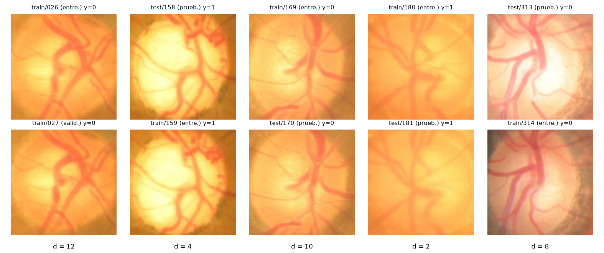
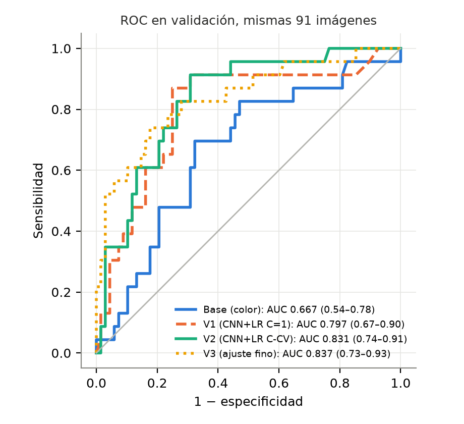
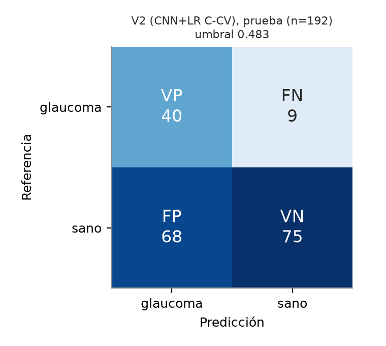
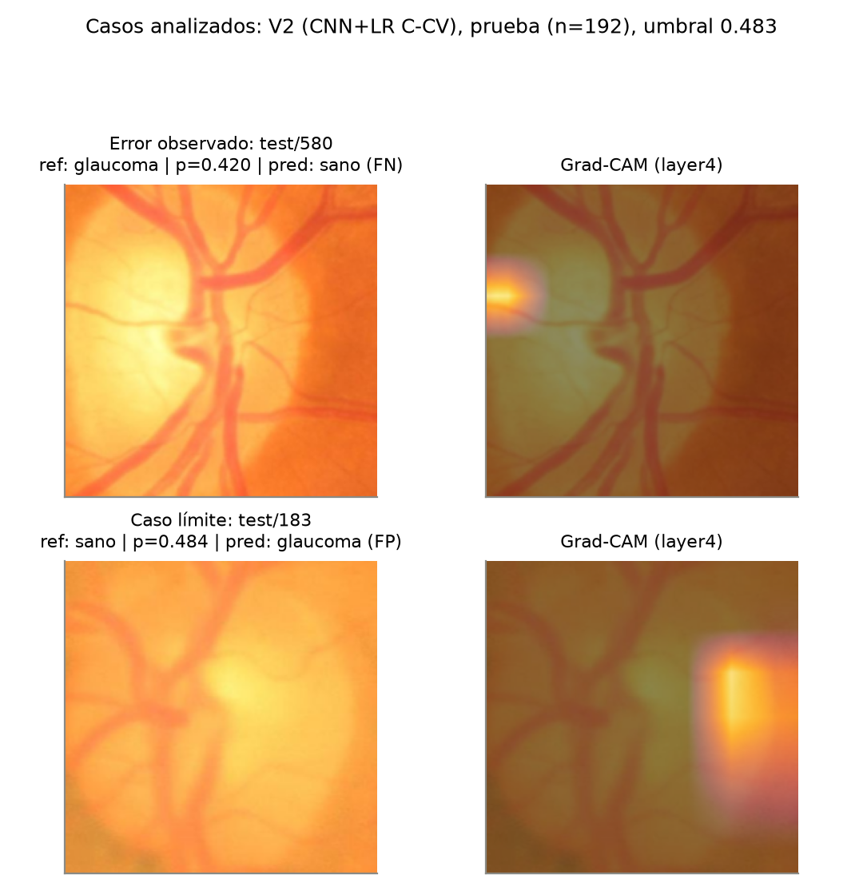

Imágenes Médicas 34740 · Entrega final · Proyecto B
Clasificación glaucoma / sano en ORIGA-light, con la línea base comparada contra tres variantes en los mismos casos y una única evaluación en prueba.
1 · Problema y datos
2 · Partición y control de fuga
| Partición | Imágenes | Glaucoma | Sano |
|---|---|---|---|
| Entrenamiento | 363 | 94 | 269 |
| Validación | 91 | 23 | 68 |
| Prueba evaluada | 192 | 49 | 143 |
| Prueba excluida | 4 | 2 | 2 |
Validación: 20 % estratificado de train, semilla 42. Prueba: ORIGA/test.

3 · Método
Recorte JPG RGB y etiqueta del CSV
Base: 256 px, [0,1]. Variantes: 224 px, normalización de ImageNet
Base: 8 rasgos de color y palidez + regresión logística (LR)
V1/V2: ResNet-18 fija + LR · V3: ajuste fino
Validación (91): comparar, elegir y fijar el umbral
Prueba (192): una sola vez
4 · Resultado en validación (mismas 91 imágenes)
| Versión | Sens. (0,5) | Esp. (0,5) | AUC (IC 95 %) | AUC ent. |
|---|---|---|---|---|
| Base | 16/23 | 43/68 | 0,667 (0,54–0,78) | 0,649 |
| V1 · C = 1 | 13/23 | 57/68 | 0,797 (0,67–0,90) | 1,000 |
| V2 · C por CV | 17/23 | 52/68 | 0,831 (0,74–0,91) | 0,810 |
| V3 · ajuste fino | 9/23 | 66/68 | 0,837 (0,73–0,93) | 0,999 |

5 · Resultado final en prueba (V2, una sola vez)

6 · Error, caso límite y ejecución

$ python predecir.py ../archive/ORIGA/test/580.jpg ../archive/ORIGA/test/240.jpg
V2: ResNet-18 congelada + LR balanceada (C por CV en entrenamiento) | umbral 0.4834
test/580: puntuación 0.4200 -> sano | referencia: glaucoma (prueba)
test/240: puntuación 0.5328 -> glaucoma | referencia: glaucoma (prueba)
Inferencia con los pesos congelados (sin reentrenar). Coincide con predicciones_prueba.csv.
7 · Conclusión
Lo que sí podemos decir
Lo que no podemos concluir